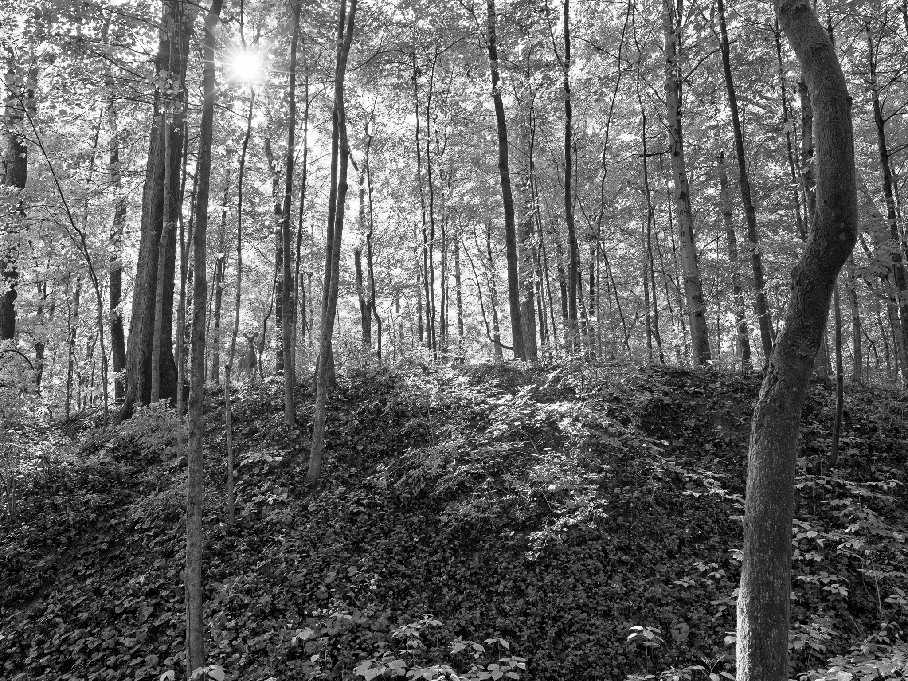
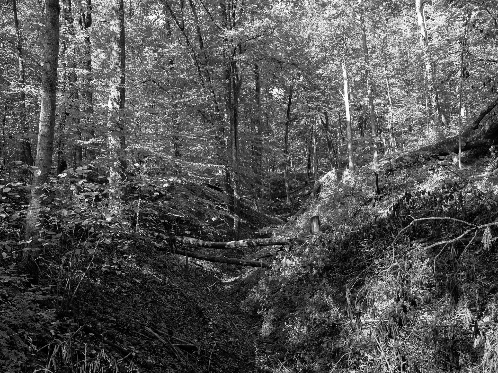
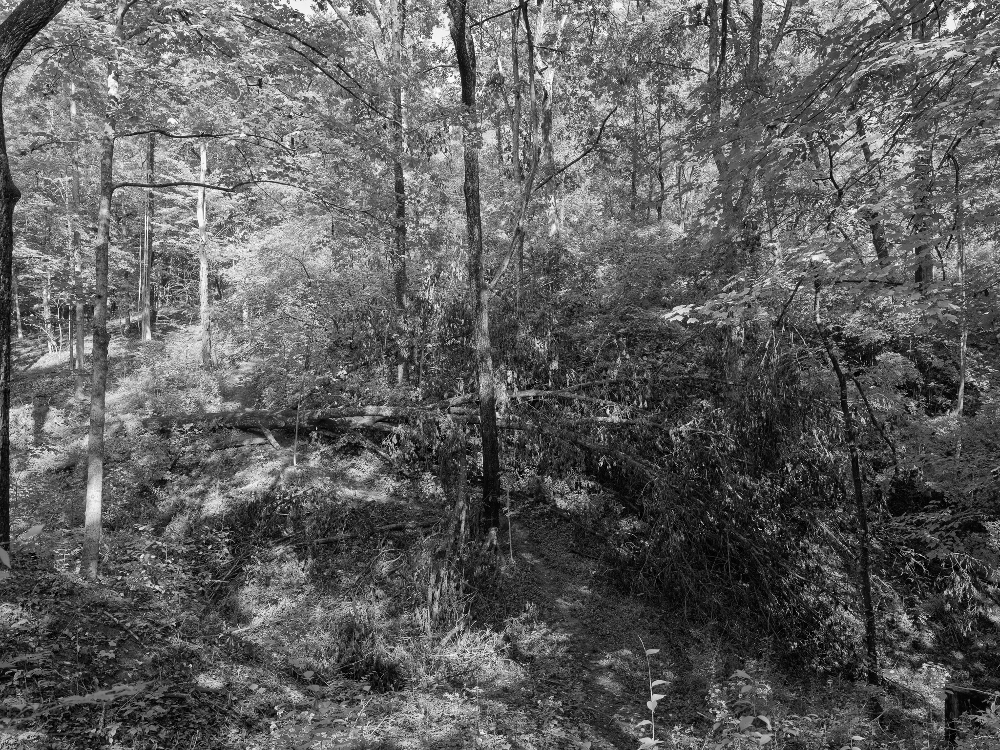
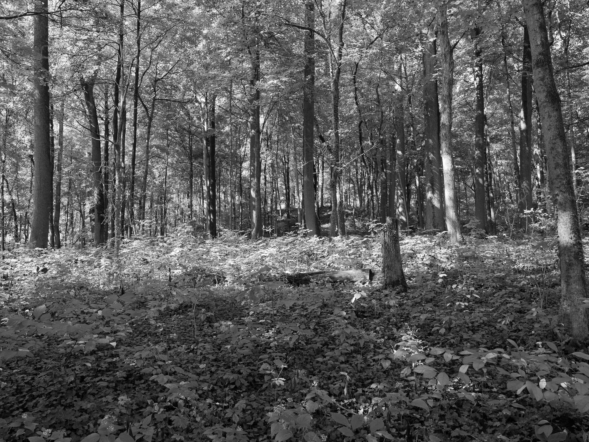
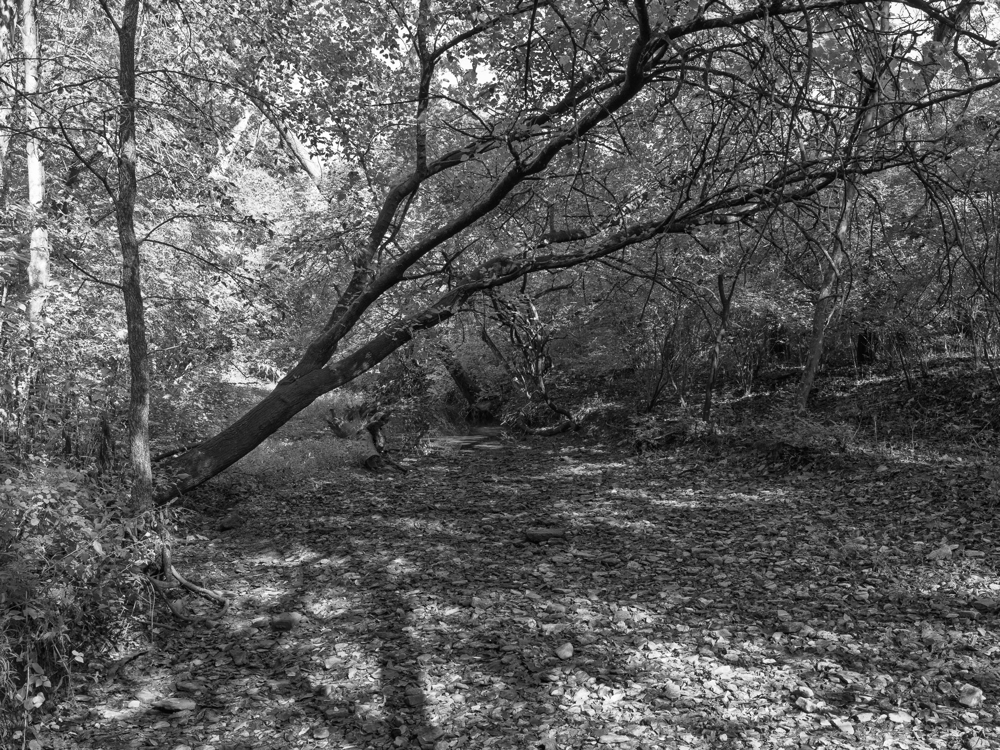

Parker Woods I · 2025-09-26
_DSF0040.jpg
Parker Woods I · 2025-09-26
_DSF0040.jpg

Parker Woods II · 2025-09-26
_DSF0045.jpg

Parker Woods III · 2025-09-26
_DSF0048.jpg

Parker Woods IV · 2025-09-26
_DSF0049.jpg

Parker Woods V · 2025-09-26
_DSF0050.jpg

Parker Woods VI · 2025-09-26
_DSF0051.jpg